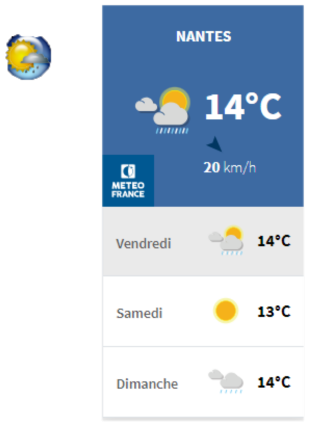
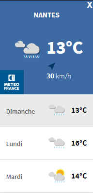
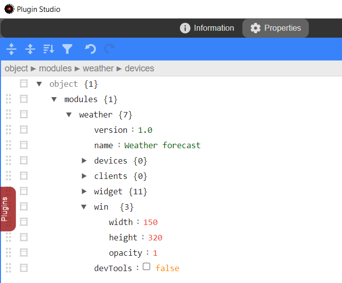

Weather forecast - Part 2
Dans la 2ème partie, nous allons ajouter une fenêtre fille de l'interface A.V.A.T.A.R construite avec le framework Electron
Développer une fenêtre pour un plugin est facilité par A.V.A.T.A.R. Il n'est pas nécessaire de construire une application Electron complète, vous utilisez seulement les méthodes de l'API.
Comprendre les fichiers
Pour construire une fenêtre, plusieurs fichiers sont nécessaires:
Main process
Le fichier "main process" est le fichier script node.js du plugin (coté serveur web).
Dans ce fichier sont effectuées toutes les actions qui sont en relation avec A.V.A.TA.R et le script du plugin, comme par exemple la création d'une fenêtre fille.
Pre load
Le fichier "pre load" est une passerelle entre le "main process" et le "renderer process" (coté client Chromium).
Dans ce fichier sont définies les "méthodes passerelles" qui enverront ou recevront des informations entre le "main process" et le "renderer process" via ce processus de communication.
Renderer process
Important
Les processus de rendu d'Electron sont exécutés dans un bac à sable.
Ils se comportent de la même manière qu'un processus de rendu Chrome normal. Un moteur de rendu en bac à sable n'aura donc pas d'environnement Node.js initialisé. Plus simplement, vous ne pouvez pas utiliser node.js dans un processus de rendu.
Le bac à sable limite les dommages que peut causer un code malveillant en limitant l'accès à la plupart des ressources du système et ne peuvent utiliser librement que les cycles de l'unité centrale et la mémoire.
Le "renderer process" comprend 3 principaux fichiers:
javascript
Dans ce fichier sont reçus ou envoyées toutes les communications du "main process" (en passant par le "pre load") mais aussi, peut effectuer toutes les actions javascript de l'interface web (coté client Chromium).
Note
Il n'est pas nécessaire d'avoir un fichier javascript si aucune communication entre le "main process" et le "renderer process" n'est effectuée, ni aucune fonction javascript pour la page web.
HTML
Le fichier "html" est le fichier de rendu de la page web. Le fichier javascript est appelé dans ce fichier.
CSS
Le fichier "css" est le fichier de mise en forme de la page web. il est appelé dans le fichier "html".
En résumé
| Type | SubType | language | Obligatoire | Format | Commentaire |
|---|---|---|---|---|---|
| Main process | node.js >= ES6 |
oui | <plugin>.js | Le script du plugin | |
| Pre load | node.js CommonJS |
non | <plugin>-preload.js | Le fichier passerelle. Obligatoire seulement si une communication d'information est nécessaire entre le Main proccess et le Renderer process |
|
| Renderer | javascript | >= ES6 | non | <plugin>-renderer.js | Obligatoire seulement si une communication d'information est nécessaire avec le Main proccess |
| Renderer | html | html | oui | <plugin>.html | Le fichier de rendu de la page web |
| Renderer | css | css | non | <plugin>.css | Le fichier de mise en forme de la page web |
Créer les fichiers du plugin
Le fichier Pre load
- Ouvrez un terminal et déplacez-vous dans le répertoire du plugin
cd <A.V.A..T.A.R>/resources/app/cores/plugin/weather - Créez un fichier weather-preload.js
-
Copiez le template de fichier pre load ci-dessous dans le fichier
weather-preload.jsconst { contextBridge, ipcRenderer } = require('electron') contextBridge.exposeInMainWorld('electronAPI', { })
Le fichier HTML
- Dans le répertoire du plugin, créez un fichier weather.html
-
Copiez le template de fichier html ci-dessous dans le fichier
Note: Les import du weather.css et du weather-renderer.js sont inclus
weather.html<!DOCTYPE html> <html> <head> <meta charset="UTF-8"> <meta http-equiv="Content-Security-Policy" content="default-src 'self'; script-src 'self'; script-src-elem 'self'; style-src 'self' 'unsafe-inline'"> <meta http-equiv="X-Content-Security-Policy" content="default-src 'self'; script-src 'self'"/> <link href="./weather.css" rel="stylesheet" type="text/css" /> </head> <body> <script src="./weather-renderer.js"></script> </body> </html>
Le fichier javacript
- Dans le répertoire du plugin, créez un fichier weather-renderer.js
- Pour l'instant, le fichier est vide
Le fichier CSS
- Dans le répertoire du plugin, créez un fichier weather.css
-
Copiez le template de fichier css ci-dessous dans le fichier
weather.cssbody, html { width: 100%; height: 100%; overflow: hidden; margin: 0; -webkit-app-region: drag; }
Créer la fenêtre
Dans le script du plugin,
-
Ajoutez une variable globale WeatherWindow
weather.js// Private let WeatherWindow; // weather forecast window let currentwidgetState; let periphInfo = []; // devices table let Locale; //language pak -
Ajoutez les actions du bouton
weather.jsexport async function widgetAction (even) { // Save current state currentwidgetState = even.value.action === 'On' ? true : false; // If 'On', show window if (!WeatherWindow && even.value.action === 'On') return openWeatherWindow(); // If 'Off', destroy window if (WeatherWindow && even.value.action === 'Off') WeatherWindow.destroy(); } -
Ajoutez dans le script du plugin la méthode suivante à la fin du fichier:
weather.js 1 2 3 4 5 6 7 8 9 10 11 12 13 14 15 16 17 18 19 20 21 22 23 24 25 26 27 28 29 30 31 32
const openWeatherWindow = async () => { if (WeatherWindow) return WeatherWindow.show(); let style = { parent: Avatar.Interface.mainWindow(), frame: false, movable: true, resizable: false, minimizable: false, alwaysOnTop: false, show: false, width: 150, height: 320, opacity : 1, icon: path.resolve(__dirname, 'assets', 'images', 'weather.png'), webPreferences: { preload: path.resolve(__dirname, 'weather-preload.js') }, title: "Weather forecast" } WeatherWindow = await Avatar.Interface.BrowserWindow(style, path.resolve(__dirname, 'weather.html'), false); WeatherWindow.once('ready-to-show', () => { WeatherWindow.show(); }) WeatherWindow.on('closed', () => { WeatherWindow = null; }) } -
Redémarrez A.V.A.T.A.R
- Testez le widget bouton
- Vous pouvez aussi essayer de déplacer la fenêtre en faisant un drag&drop
Explications
Quelques explications sur les méthodes et objects de la création de la fenêtre dans la méthode openWeatherWindow
Avatar.Interface.mainWindow()
Returns the A.V.A.T.A.R main window
class BrowserWindow #
Create and control browser windows.
Important
This class is controled by A.V.A.T.A.R. You have to use the Avatar.Interface.BrowserWindow() to create a new browser window.
- line 23: Create a new browser window
WeatherWindow = await Avatar.Interface.BrowserWindow(style, path.resolve(__dirname, 'weather.html'), false);
win.show() event method #
Shows and gives focus to the window.
-
line 3: Creates window only if the WeatherWindow variable is undefined.
if (WeatherWindow) return WeatherWindow.show(); -
line 26: Show the window when the event
ready-to-showis emittedWeatherWindow.once('ready-to-show', () => { WeatherWindow.show(); })
Event methods
Event: 'ready-to-show' #
Emitted when the web page has been rendered (while not being shown) and window can be displayed without a visual flash.
WeatherWindow.once('ready-to-show', () => {
WeatherWindow.show();
})
Event: 'closed' #
Emitted when the window is closed. After you have received this event you should remove the reference to the window and avoid using it any more.
WeatherWindow.on('closed', () => {
WeatherWindow = null;
})
window position
Save
La sauvegarde de la position de la fenêtre est effectuée lorsque A.V.A.T.A.R est redémarré ou quitter.
-
Ajoutez
fs-extradans les importsimport * as path from 'node:path'; import fs from 'fs-extra'; import * as url from 'url'; -
Ajoutez dans la méthode onClose() le test de sauvegarde comme ci-dessous
export async function onClose (widgets) { // Save widget position if (Config.modules.weather.widget.display === true) { await Widget.initVar(widgetFolder, widgetImgFolder, null, Config.modules.weather); if (widgets) await Widget.saveWidgets(widgets); } // Save meteo forecast position if (WeatherWindow) { // The window is displayed // Get window instance position let pos = WeatherWindow.getPosition(); // Writes position and the window state (displayed or closed) fs.writeJsonSync(path.resolve(__dirname, 'assets', 'style.json'), { x: pos[0], y: pos[1], start: true, }); } else { // The window is closed // If the backup file exists then keeps the position first let prop = {}; if (fs.existsSync(path.resolve(__dirname, 'assets', 'style.json'))) { prop = fs.readJsonSync(path.resolve(__dirname, 'assets', 'style.json'), { throws: false }); } // Writes the window state (closed) prop.start = false; fs.writeJsonSync(path.resolve(__dirname, 'assets', 'style.json'), prop); } }
restore
La restitution de la position de la fenêtre est effectuée à la création de la fenêtre.
-
Ajoutez dans la méthode openWeatherWindow() la restitution de la position comme ci-dessous
weather.jsconst openWeatherWindow = async () => { if (WeatherWindow) return WeatherWindow.show(); let style = { parent: Avatar.Interface.mainWindow(), frame: false, movable: true, resizable: false, minimizable: false, alwaysOnTop: false, show: false, width: 150, height: 320, opacity : 1, icon: path.resolve(__dirname, 'assets', 'images', 'weather.png'), webPreferences: { preload: path.resolve(__dirname, 'weather-preload.js') }, title: "Weather forecast" }; if (fs.existsSync(path.resolve(__dirname, 'assets', 'style.json'))) { let prop = fs.readJsonSync(path.resolve(__dirname, 'assets', 'style.json'), { throws: false }); if (prop) { style.x = prop.x; style.y = prop.y; } } WeatherWindow = await Avatar.Interface.BrowserWindow(style, path.resolve(__dirname, 'weather.html'), false); WeatherWindow.once('ready-to-show', () => { WeatherWindow.show(); }) WeatherWindow.on('closed', () => { WeatherWindow = null; }) }
Restore window state
La restitution de l'état de la fenêtre est effectuée lorsque A.V.A.T.A.R a terminé d'afficher les widgets
-
Ajoutez dans la méthode readyToShow() la restitution de l'état comme ci-dessous
weather.js2. Ajoutez la variable currentwidgetState àexport async function readyToShow () { // If a backup file exists if (fs.existsSync(path.resolve(__dirname, 'assets', 'style.json'))) { let prop = fs.readJsonSync(path.resolve(__dirname, 'assets', 'style.json'), { throws: false }); // Set currentwidgetState global variable currentwidgetState = prop.start; // currentwidgetState = true : creates and shows new window if (currentwidgetState) openWeatherWindow(); } else // not displayed if the window is closed currentwidgetState = false; // Refreshs information of the button widget regarding window state ('On' or 'Off' image) Avatar.Interface.refreshWidgetInfo({plugin: 'weather', id: "808221"}); }falsedans l'eventclosedcomme ci-dessousweather.jsWeatherWindow.on('closed', () => { // not displayed if the window is closed currentwidgetState = false; WeatherWindow = null; }) -
Redémarrez A.V.A.T.A.R
- Testez la sauvegarde/restore de la position et de l'état de la fenêtre
Ajoutez la météo
Vous pouvez récupérer un widget météo d'une ville sur plusieurs sites. Soyez prudent sur le choix du site, certains récupèrent beaucoup d'information de connexion (comme weatherwidget.org), d'autres sont carrément répertoriés comme très dangereux (comme widget-meteo.com). Le plus simple est d'utiliser un site sécurisé (comme le site de météo France qui donne aussi la météo dans tous les pays)
Warning
Souvenez-vous aussi de la création du fichier html. Ce fichier dû à l'exécution du rendu dans le bac à sable limite les dommages que peut causer un code malveillant mais impose aussi une validation des liens externes. Pour certains sites qui exécutent du code javascript, il vous faudra autoriser le site dans les security policy
- Ouvrez un navigateur et connectez-vous sur le site de météo France ou le site de votre choix
- Récupérez le code html
-
Copiez-le dans le fichier html comme ci-dessous
weather.html4. Changez la taille de l'élément iframe pour width="100%" et height="100%"<!DOCTYPE html> <html> <head> <meta charset="UTF-8"> <meta http-equiv="Content-Security-Policy" content="script-src 'self'; script-src-elem 'self'; style-src 'self' 'unsafe-inline'"> <meta http-equiv="X-Content-Security-Policy" content="default-src 'self'; script-src 'self'"/> <link href="./weather.css" rel="stylesheet" type="text/css" /> </head> <body> <iframe id="widget_autocomplete_preview" width="150" height="300" frameborder="0" src="https://meteofrance.com/widget/prevision/441090##3D6AA2" title="Prévisions Nantes par Météo-France"> </iframe> <script src="./weather-renderer.js"></script> </body> </html>weather.html5. Autorisez le site dans les security policy en l'ajoutant dans la police<iframe id="widget_autocomplete_preview" width="100%" height="100%" frameborder="0" src="https://meteofrance.com/widget/prevision/441090##3D6AA2" title="Prévisions Nantes par Météo-France"> </iframe>default-srccomme ci-dessousweather.html6. Redémarrez A.V.A.T.A.R<meta http-equiv="Content-Security-Policy" content="default-src 'self' https://meteofrance.com; script-src 'self'; script-src-elem 'self'; style-src 'self' 'unsafe-inline'">
Tip
Si vous constatez un problème de taille de fenêtre, vous pouvez l'ajuster dans le script et l'objet style.width et style.height
Transférer des informations entre les Main et Renderer processus
Nous pourrions nous arrêter là puisque le plugin est fonctionnel mais pour l'exemple, nous allons transférer des informations entre le main process et le renderer process.
Il existe plusieurs types de communication inter process (IPC):
Type 1: Processus principal (Main) vers moteur de rendu (Renderer)
Type 2: Moteur de rendu vers le processus principal (unidirectionnel)
Type 3: Moteur de rendu vers le processus principal (bidirectionnel)
Tip
Pour vous familiariser avec ces concepts, vous pouvez lire la documentation Electron sur La communication inter-processus
Dans notre exemple, nous allons d'abord utiliser le types 1 pour envoyer un message depuis le main process au moteur de rendu pour qu'il exécute une fonction puis ensuite le type 3 pour que le moteur de rendu demande une information au processus principal et recevoir la réponse, enfin nous utiliserons le type 2 pour que le moteur de rendu envoie un ordre d'exécution de fermeture de la fenêtre au processus principal.
Type 1: Envoyer un message au moteur de rendu
L'envoi d'un message au moteur de rendu s'effectue via son instance WebContents, cette instance de WebContents contient une méthode send qui peut être utilisée.
-
Ajoutez dans le script du plugin la méthode
sendcontents.send(channel, ...args)
- channel string
- ...args any[]
Envoye un message asynchrone et un certain nombre d'arguments au processus de rendu via channel
Warning
NOTE: L'envoi de types Javascript non standards tels que des objets DOM ou des objets spéciaux déclenchera une exception.
Pour notre exemple, nous devons signifier au moteur de rendu qu'il doit exécuter une action de mise à jour d'un elément
labelaprès son initialisation complète (afin que tous les eléments du DOM soient accessibles). Le moyen de faire ca est de placer la méthodesenddans l'eventready-to-showweather.jsconst openWeatherWindow = async () => { if (WeatherWindow) return WeatherWindow.show(); let style = { parent: Avatar.Interface.mainWindow(), frame: false, movable: true, resizable: false, minimizable: false, alwaysOnTop: false, show: false, width: 150, height: 320, opacity : 1, icon: path.resolve(__dirname, 'assets', 'images', 'weather.png'), webPreferences: { preload: path.resolve(__dirname, 'weather-preload.js') }, title: "Weather forecast" }; if (fs.existsSync(path.resolve(__dirname, 'assets', 'style.json'))) { let prop = fs.readJsonSync(path.resolve(__dirname, 'assets', 'style.json'), { throws: false }); if (prop) { style.x = prop.x; style.y = prop.y; } } WeatherWindow = await Avatar.Interface.BrowserWindow(style, path.resolve(__dirname, 'weather.html'), false); WeatherWindow.once('ready-to-show', () => { WeatherWindow.show(); WeatherWindow.webContents.send('onInit-weather'); }) WeatherWindow.on('closed', () => { // not displayed if the window is closed currentwidgetState = false; WeatherWindow = null; }) } -
Exposition de
ipcRenderer.onvia l'ajout dans le script de pre loadipcRenderer.on(channel, listener)
- channel string
- listener Function
- event IpcRendererEvent
- ...args any[]
Ecoute sur channel et listener sera appelé ainsi: listener(event, args...) à la réception d'un nouveau message.
weather-preload.jsconst { contextBridge, ipcRenderer } = require('electron') contextBridge.exposeInMainWorld('electronAPI', { onInitWeather: (callback) => ipcRenderer.on('onInit-weather', (_event, value) => callback(value)) })Après avoir chargé le script de préchargement, votre processus de rendu aura accès à la fonction d’écoute
window.electronAPI.onInitWeather(). -
Ajoutez la fonction d’écoute dans le moteur de rendu
weather-renderer.jsasync function setElementLabel() { } window.electronAPI.onInitWeather( _event => { setElementLabel(); })
En résumé :
Nous avons envoyé un message au rendu par la méthode send via le script de pre load par ipcRenderer.on et le rendu le reçoit via la fonction d'écoute onInitWeather
Il nous reste maintenant à demander la valeur d'un elément label, pour ce faire nous établir une communication via le type 3 Moteur de rendu vers le processus principal (bidirectionnel)
Type 3: Le rendu demande une information au processus principal et attend la réponse (bidirectionnel)
Une communication bidirectionnel est l'appel d'un module du processus principal à partir du code du processus de rendu avec l'attente d'un résultat. Cela peut être fait en utilisant ipcRenderer.invoke dans le script de pre load jumelé avec ipcMain.handle dans le main process.
-
Ajoutez un module d'écoute
ipcMain.handle(channel, listener)
- channel string
- listener Function
- event IpcMainInvokeEvent
- ...args any[]
Ajoute un module d'écoute sur channel dans le main process. Ce gestionnaire est appelé chaque fois que le processus de rendu appelle
ipcRenderer.invoke(channel, ...args).Si listener renvoie une Promise, le résultat final de la promesse sera retourné en réponse à l'appelant distant. Sinon, la valeur de retour de l'écouteur sera utilisée comme valeur de la réponse.
Warning
- The IPC main is controled by A.V.A.T.A.R. You have to use the Avatar.Interface.ipcMain() for returning the A.V.A.T.A.R ipcMain.
- Un handle pour le channel ne peut être déclaré qu'une seule fois. Il doit obligatoirement être supprimé par un ipcMain.removeHandler avant d'être déclaré de nouveau.
- Ajoutez dans la méthode openWeatherWindow l'ajout et la suppression du gestionnaire comme ci-dessous
weather.jsconst openWeatherWindow = async () => { if (WeatherWindow) return WeatherWindow.show(); let style = { parent: Avatar.Interface.mainWindow(), frame: false, movable: true, resizable: false, minimizable: false, alwaysOnTop: false, show: false, width: 150, height: 320, opacity : 1, icon: path.resolve(__dirname, 'assets', 'images', 'weather.png'), webPreferences: { preload: path.resolve(__dirname, 'weather-preload.js') }, title: "Weather forecast" }; if (fs.existsSync(path.resolve(__dirname, 'assets', 'style.json'))) { let prop = fs.readJsonSync(path.resolve(__dirname, 'assets', 'style.json'), { throws: false }); if (prop) { style.x = prop.x; style.y = prop.y; } } WeatherWindow = await Avatar.Interface.BrowserWindow(style, path.resolve(__dirname, 'weather.html'), false); WeatherWindow.once('ready-to-show', () => { WeatherWindow.show(); WeatherWindow.webContents.send('onInit-weather'); }) // returns the localized message defined in arg Avatar.Interface.ipcMain().handle('weather-msg', async (_event, arg) => {return Locale.get(arg)}); WeatherWindow.on('closed', () => { // not displayed if the window is closed currentwidgetState = false; // Removes the handler `weather-msg` when the window is closed Avatar.Interface.ipcMain().removeHandler('weather-msg'); WeatherWindow = null; }) } -
Exposition de
ipcRenderer.invokevia l'ajout dans le script de pre loadipcRenderer.invoke(channel, ...args)
- channel string
- ...args any[]
Retourne une Promise
- qui se résout avec la réponse du processus principal. Envoie un message au processus principal via channel et attend un résultat asynchrone.
weather-preload.jsconst { contextBridge, ipcRenderer } = require('electron') contextBridge.exposeInMainWorld('electronAPI', { onInitWeather: (callback) => ipcRenderer.on('onInit-weather', (_event, value) => callback(value)), getMsg: (value) => ipcRenderer.invoke('weather-msg', value) })Le module d'écoute
weather-msgest appelé chaque fois que la fonctionwindow.electronAPI.getMsg()du processus de rendu appelleipcRenderer.invoke() -
Ajoutez la fonction getMsg() dans le processus de rendu
weather-renderer.jsasync function Lget (target, ...args) { if (args) { target = [target]; args.forEach(arg => { target.push(arg); }) } return await window.electronAPI.getMsg(target); } async function setElementLabel() { document.getElementById('quit').innerHTML = await Lget("message.quit"); } window.electronAPI.onInitWeather( _event => { setElementLabel(); }) -
Localisez le message
- Modifiez le fichier weather/locales/en.pak comme ci-dessous
NOTE: Consultez <lang>.get() pour plus d'information
en.pak{ "message": { "quit":"X" } } -
Ajoutez un elément
labeldans le fichier htmlweather.html6. Ajoutez un style dans le fichier css<!DOCTYPE html> <html> <head> <meta charset="UTF-8"> <meta http-equiv="Content-Security-Policy" content="script-src 'self'; script-src-elem 'self'; style-src 'self' 'unsafe-inline'"> <meta http-equiv="X-Content-Security-Policy" content="default-src 'self'; script-src 'self'"/> <link href="./weather.css" rel="stylesheet" type="text/css" /> </head> <body> <iframe id="widget_autocomplete_preview" width="150" height="300" frameborder="0" src="https://meteofrance.com/widget/prevision/441090##3D6AA2" title="Prévisions Nantes par Météo-France"> </iframe> <label id="quit" class="quit"></label> <script src="./weather-renderer.js"></script> </body> </html>weather.cssbody, html { width: 100%; height: 100%; overflow: hidden; margin: 0; -webkit-app-region: drag; } .quit{ position: fixed; top: 0px; right: 2px; -webkit-app-region:no-drag; font: 13px helvetica neue, helvetica, arial, sans-serif; font-weight: bold; color: rgb(255, 255, 255); z-index: 2; } .quit:hover { color: rgb(247, 5, 5); cursor: pointer; } -
Redémarrez A.V.A.T.A.R et vérifiez l'ajout de l'elément label X dans le coin haut droit

Type 2: Le rendu envoie une information au processus principal (unidirectionnel)
Une communication unidirectionnel est l'appel d'un module du processus principal à partir du code du processus de rendu. Cela peut être fait en utilisant ipcRenderer.send dans le script de pre load jumelé avec ipcMain.on dans le main process.
-
Ajoutez un module d'écoute
ipcMain.on(channel, listener)
- channel string
- listener Function
- event IpcMainEvent
- ...args any[]
Ecoute sur channel et listener sera appelé ainsi: listener(event, args...) à la réception d'un nouveau message.
Warning
- The IPC main is controled by A.V.A.T.A.R. You have to use the Avatar.Interface.ipcMain() for returning the A.V.A.T.A.R ipcMain.
- Un Listener pour le channel ne peut être déclaré qu'une seule fois. Il doit obligatoirement être supprimé par un ipcMain.removeAllListeners avant d'être déclaré de nouveau.
Pour notre exemple, nous devons signifier au processus principal qu'il doit exécuter la fermeture de la fenêtre par un click de l'elément label X.
NOTE: Cette fermeture est réalisée par la méthode d'instance win.destroy()
- Ajoutez dans la méthode openWeatherWindow l'ajout et la suppression du module d'écoute comme ci-dessous
weather.jsconst openWeatherWindow = async () => { if (WeatherWindow) return WeatherWindow.show(); let style = { parent: Avatar.Interface.mainWindow(), frame: false, movable: true, resizable: false, minimizable: false, alwaysOnTop: false, show: false, width: 150, height: 320, opacity : 1, icon: path.resolve(__dirname, 'assets', 'images', 'weather.png'), webPreferences: { preload: path.resolve(__dirname, 'weather-preload.js') }, title: "Weather forecast" }; if (fs.existsSync(path.resolve(__dirname, 'assets', 'style.json'))) { let prop = fs.readJsonSync(path.resolve(__dirname, 'assets', 'style.json'), { throws: false }); if (prop) { style.x = prop.x; style.y = prop.y; } } WeatherWindow = await Avatar.Interface.BrowserWindow(style, path.resolve(__dirname, 'weather.html'), false); WeatherWindow.once('ready-to-show', () => { WeatherWindow.show(); WeatherWindow.webContents.send('onInit-weather'); }) // Destroys window by a click on the 'X' label Avatar.Interface.ipcMain().one('weather-quit', () => { // Closed window WeatherWindow.destroy(); // refresh widget button on window closed Avatar.Interface.refreshWidgetInfo({plugin: 'weather', id: "808221"}); }); // returns the localized message defined in arg Avatar.Interface.ipcMain().handle('weather-msg', async (_event, arg) => {return Locale.get(arg)}); WeatherWindow.on('closed', () => { // not displayed if the window is closed currentwidgetState = false; // Removes the `weather-msg` handler when the window is closed Avatar.Interface.ipcMain().removeHandler('weather-msg'); // Removes the `weather-quit` listener when the window is closed Avatar.Interface.ipcMain().removeAllListeners('weather-quit'); WeatherWindow = null; }) } -
Exposition de
ipcRenderer.sendvia l'ajout dans le script de pre loadipcRenderer.send(channel, ...args)
- channel string
- ...args any[]
Envoie un message asynchrone ainsi que des arguments au processus principal via channel.
weather-preload.jsconst { contextBridge, ipcRenderer } = require('electron') contextBridge.exposeInMainWorld('electronAPI', { onInitWeather: (callback) => ipcRenderer.on('onInit-weather', (_event, value) => callback(value)), getMsg: (value) => ipcRenderer.invoke('weather-msg', value), quit: () => ipcRenderer.send('weather-quit') })Le listener
weather-quitest appelé chaque fois que la fonctionwindow.electronAPI.quit()du processus de rendu appelleipcRenderer.send() -
Ajoutez la fonction
window.electronAPI.quit()dans le processus de renduweather-renderer.jswindow.onbeforeunload = async (e) => { e.returnValue = false; // Calls window closure in the main process window.electronAPI.quit(); } // A click on the label calls the 'beforeunload' event document.getElementById("quit").addEventListener("click", async (event) => { window.dispatchEvent(new Event ('beforeunload')); }) async function Lget (target, ...args) { if (args) { target = [target]; args.forEach(arg => { target.push(arg); }) } return await window.electronAPI.getMsg(target); } async function setElementLabel() { document.getElementById('quit').innerHTML = await Lget("message.quit"); } window.electronAPI.onInitWeather( _event => { setElementLabel(); }) -
Redémarrez A.V.A.T.A.R et vérifiez la fermeture de la fenêtre par un click de l'elément label X
Finalisation
Quelques petits ajouts pour finaliser le plugin, par exemple :
- Que la taille de la fenêtre soient des paramètres
- Que l'on puisse facilement ouvrir la console Chromium
1: Taille de la fenêtre en paramètres
- Ajoutez des propriétés pour le plugin par Plugin studio
win = {
width: 150,
height: 320,
opacity: 1
}
devTools = false

2: Modifiez l'objet style pour inclure les paramètres
let style = {
parent: Avatar.Interface.mainWindow(),
frame: false,
movable: true,
resizable: false,
minimizable: false,
alwaysOnTop: false,
show: false,
width: Config.modules.weather.win.width,
height: Config.modules.weather.win.height,
opacity : Config.modules.weather.win.opacity,
icon: path.resolve(__dirname, 'assets', 'images', 'weather.png'),
webPreferences: {
preload: path.resolve(__dirname, 'weather-preload.js')
},
title: "Weather forecast"
};
......
3: Ajoutez l'ouverture de la console Chromium
WeatherWindow.once('ready-to-show', () => {
WeatherWindow.show();
WeatherWindow.webContents.send('onInit-weather');
// Displays the Chromium console if the devTools parameter is true
if (Config.modules.weather.devTools) WeatherWindow.webContents.openDevTools();
})
- Redémarrez A.V.A.T.A.R
Dans l'exemple suivant, nous allons tranférer ce plugin vers un client
Créer un widget bouton - Part 1Tranférer le plugin vers un client - Part 3